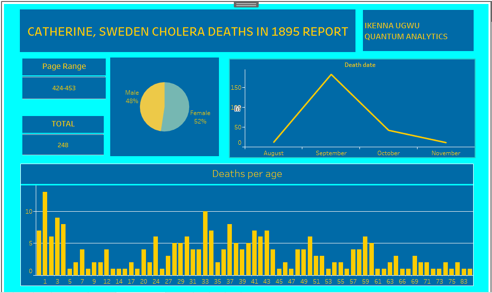

Background
Analysis on Cholera deaths in the year 1895 in Catherine, Sweden. The dataset is a small data obtained from some pages (424 - 453) in a death record book.
Goal
The goal here is to conduct a descriptive analysis on the provided data to understand how cholera fatalities occurred with respect to time, age, and sex.
Methodology
Data was obtained from Quantum Analytics Google Drive. The original data was in the Swedish language, along with its entries. The dataset was cleaned using Google Spreadsheets, and entries were translated using the "Translate My Sheet" extension to convert Swedish words to English. The cleaned data was then exported to Tableau, and appropriate charts were utilized to represent various insights.
Key Insights
- There was a total of 248 deaths analyzed, with 52% of them being females and 48% males.
- Children aged 1 had the highest number of deaths at 13, followed by 33-year-olds at 10. It is noteworthy that children aged 0 to 4 had high death rates, and a similar trend was observed in the age group of 27 to 44.
- The number of deaths increased from 12 in August to 183 in September, then dropped significantly to 42 in October and 11 in November.
Conclusion
This report represents a sample of the whole record. However, the analysis indicates that early childhood is a susceptible period for cholera due to relatively low immunity. The age group of 27 - 44, representing the working population, is also at risk due to their increased contact or interaction with the public. The rise in deaths from August to September suggests that people were likely unexpectedly hit by the epidemic during this period before implementing measures to curb it, as demonstrated in subsequent months.
Note: This report is based on historical data from 1895 and may not reflect the current state of cholera or public health.